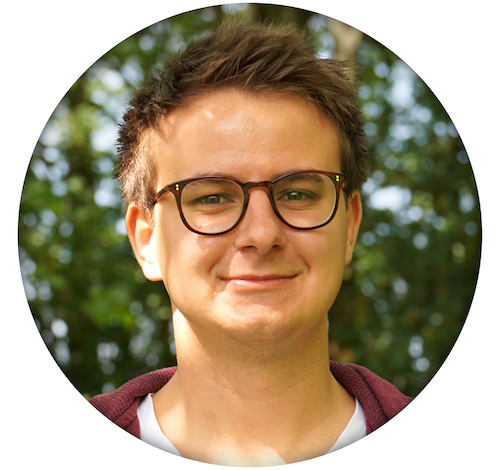

Contact
- Neckarstraße 17
- 64347 Griesheim
- Germany
- Mobil: 004915111694067
- Email: benji.bauer@hotmail.de
- Born on May 3rd 1994 in Darmstadt
Parents
- Heinz Bauer - medical specialist in general-, sports medicine and chiropractic therapy
- Denise Willomitzer-Bauer - medical technical assistant
Languages
School visits
- 2000 - 2004, Friedrich-Ebert-Schule, Griesheim
- 2004 - 2013, Edith-Stein-Schule, Darmstadt, finished on
- June 20th 2013 with receipt of the Abitur
- Since September 1st 2013, University of Applied Sciences Darmstadt, Interactive Media Design
Internships and jobs
- September 2013, Agentur für Kommunikation G+R, Pfungstadt
- February 24th 2014 - March 23th 2014, Product Management TV, Deutsche Telekom AG, Darmstadt
- Since September 2014, study adviser for „Interactive Media Design“
Programming language
- Since 2013: Java (Processing), Arduino
- Since 2014: Javascript, PHP, HTML, CSS
- Since 2015: Swift
Known applications
- Adobe Photoshop, Illustrator, InDesign, Dreamweaver, After Effekts, Github, Cinama4D, Unity,
Processing, Final Cut Pro X, iWork, MS Office